← All Posts
Joyce Llorera
February 24, 2026

Scenery
Sometimes, the simplest moments bring the deepest sense of peace. In a world full of noise, responsibilities, and endless thoughts, finding a place where the mind can rest feels truly priceless. For me, that sense of comfort comes from witnessing breathtaking views — quiet, beautiful scenes that allow me to pause, breathe, and feel free from the weight of my worries.
I remember when I was a child, we would often go to the black lava (a tourist spot in Albay) near our house, and admire the beautiful view of Mayon Volcano, along with the city stretching below it. It was one of our favorite ways to spend time with friends — simply sitting, talking, and enjoying the scenery. After all, who wouldn’t love gazing at the famous Mayon with its almost perfect cone? Even though I've lived in Albay my entire life, I never get tired of admiring its beauty. Each time I see it, the volcano still feels majestic and awe-inspiring, as if I'm seeing it for the first time.
Living in a province, I am surrounded by trees and mountains. I always see shades of green and blue, but what would it be like to experience a new environment? Like a field full of colorful flowers, specially tulips. The Netherlands has been my dream country ever since. I hope to one day visit their famous tulip fields and walk through the rows of vibrant flowers, experiencing a beauty different from what I've always known at home.
For now, since I can't afford to travel yet, I will continue admiring the views around me. Whether it's a simple scene or a majestic one, both will always catch my eye and fill me with wonder. Loving the beauty in things is simple — it only takes a moment of pause to notice and appreciate it.
Read More

Online Games
February 25, 2026

Memory Keeping
February 26, 2026

Dream Careers
August 05, 2026

The Child I Was
August 07, 2026
Gallery

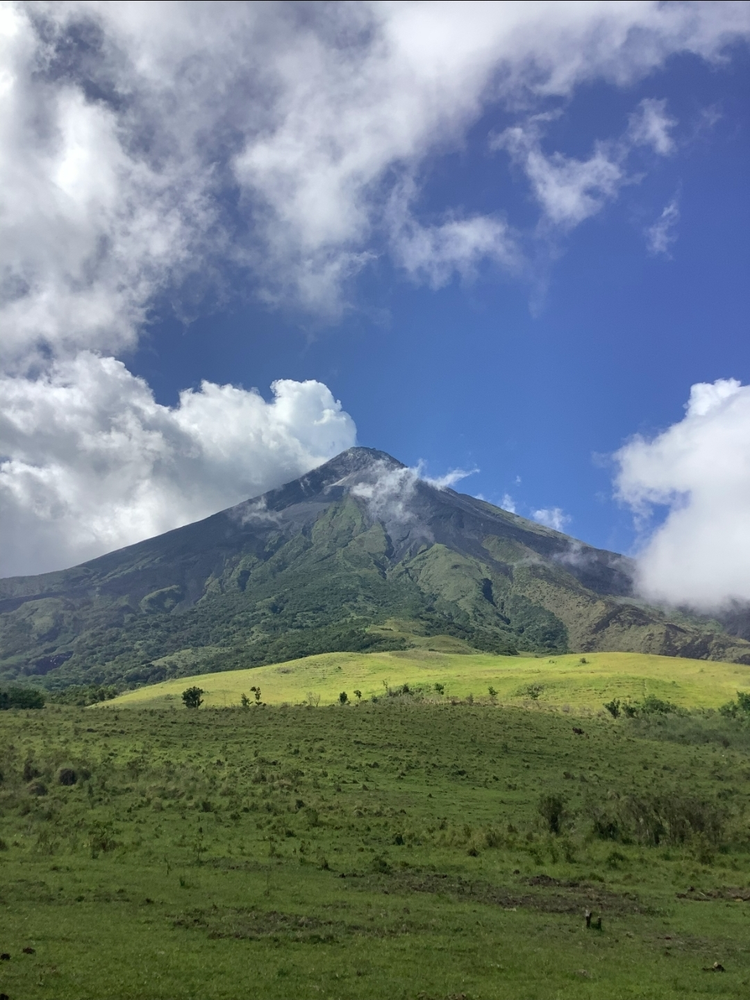
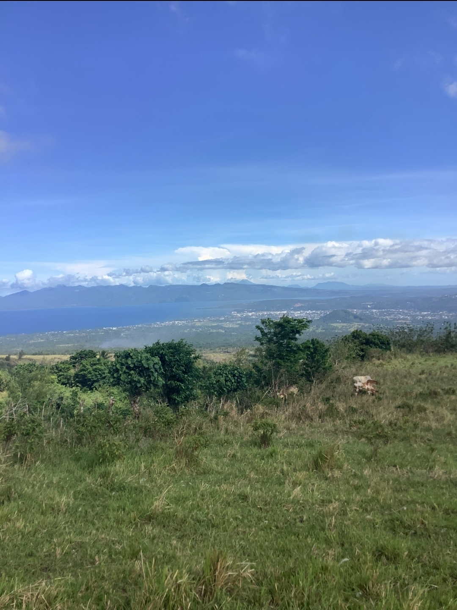
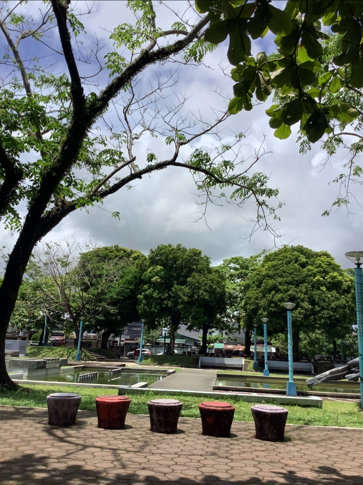
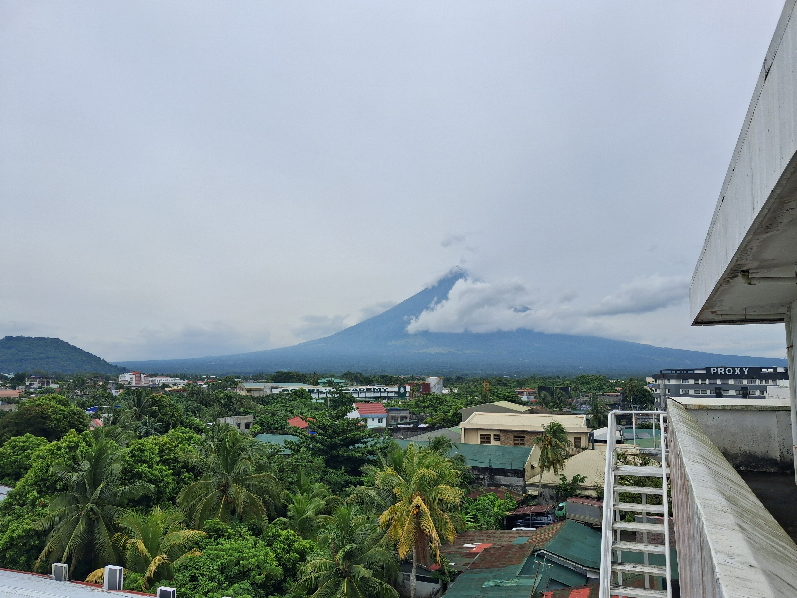
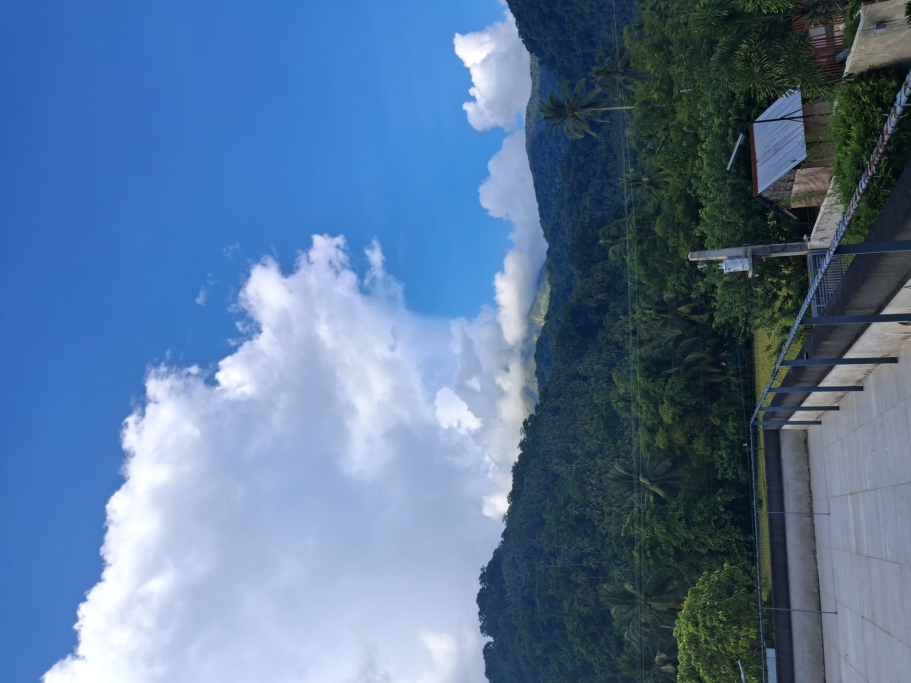
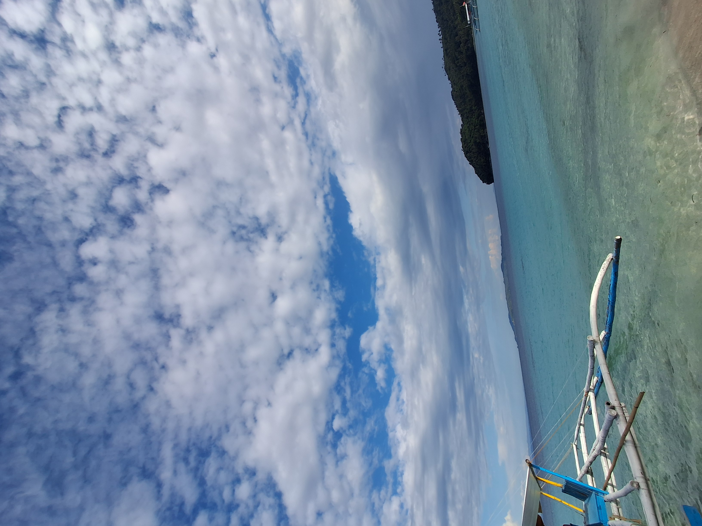
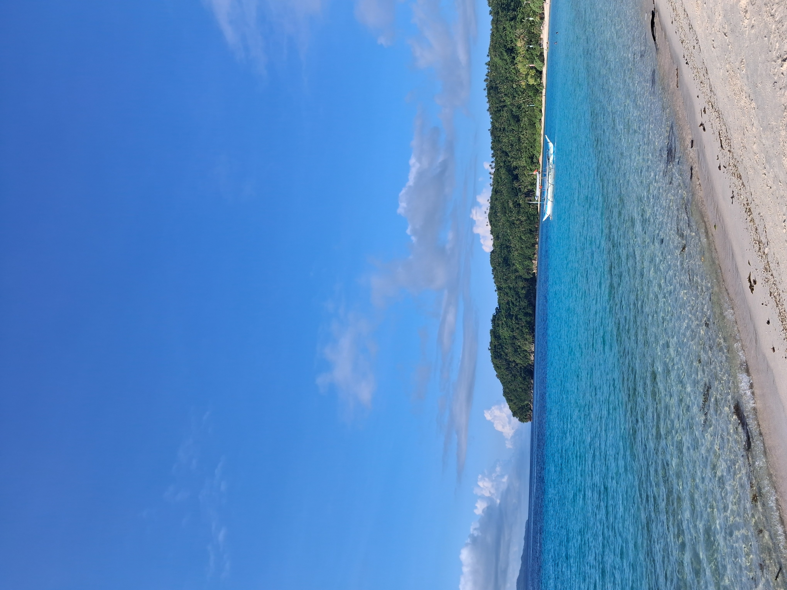
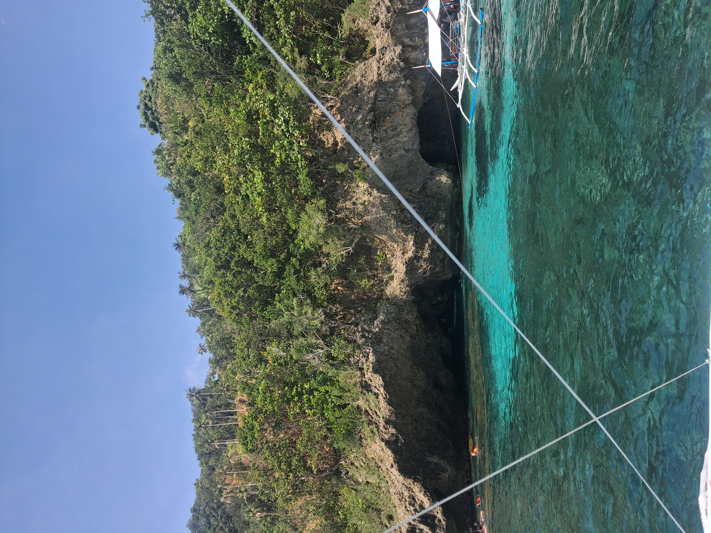
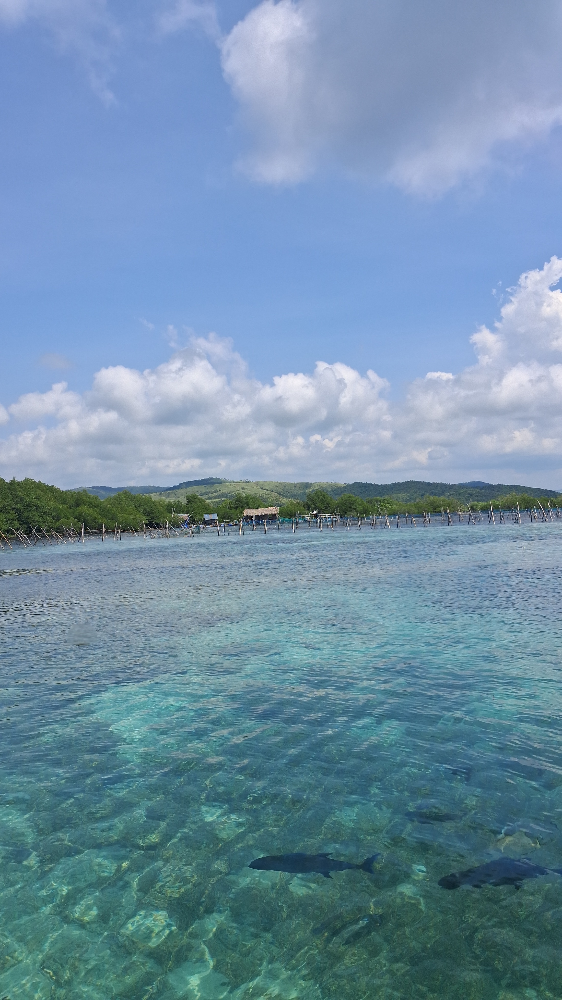
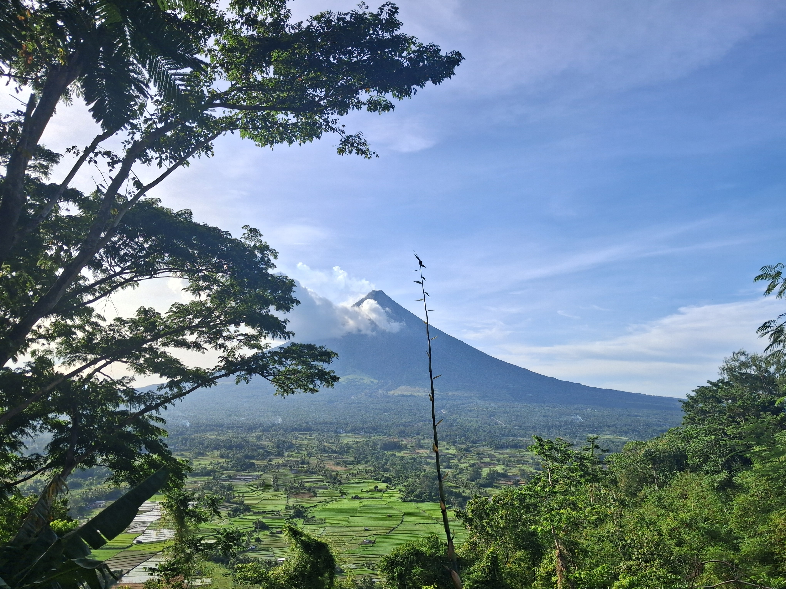
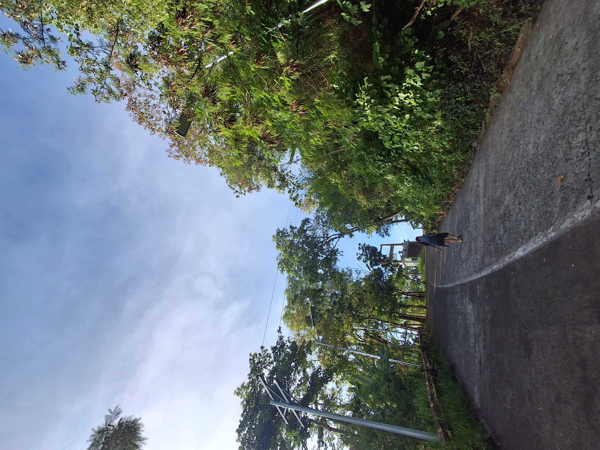
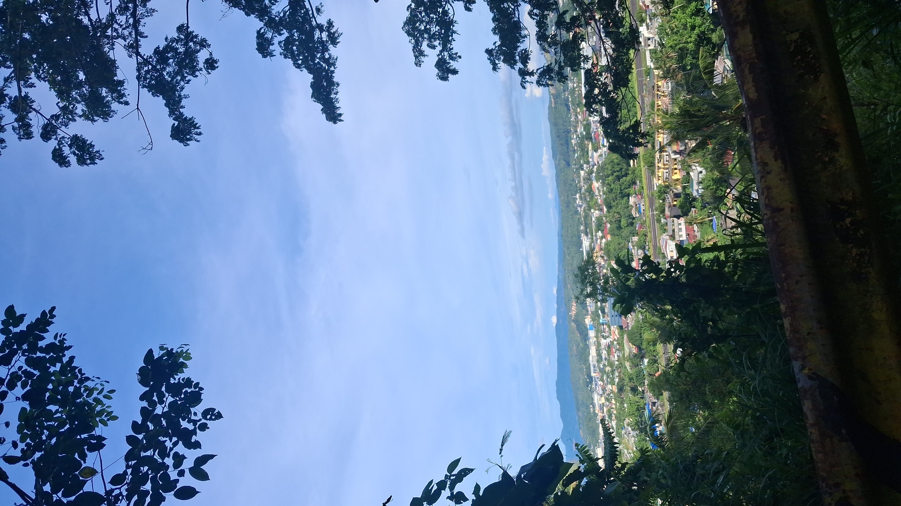
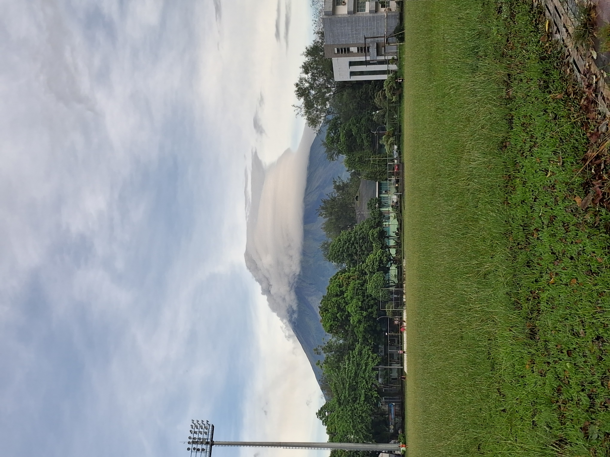
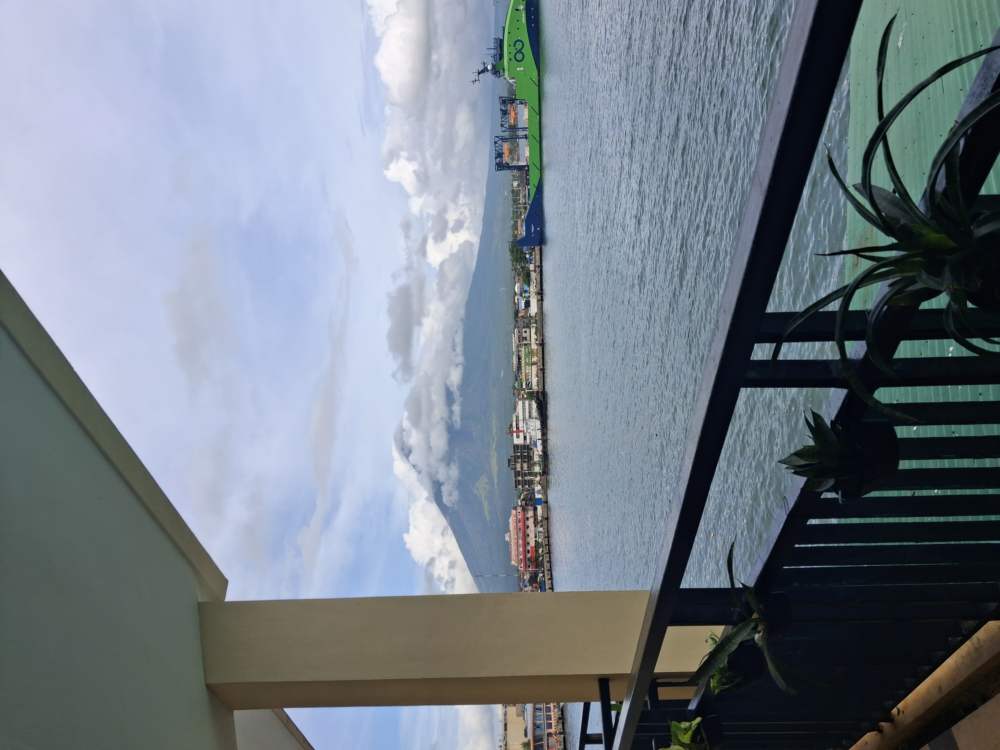